As Battery Energy Storage Systems (BESS) proliferate across industrial, commercial, and utility-scale installations, one operational challenge consistently surfaces: the act of grid-connecting an ESS can lower the grid's measured power factor (PF). While counterintuitive — since BESS can also be programmed to improve PF — the default behavior of most ESS configurations introduces reactive power imbalances, harmonic distortions, and active-reactive power mismatches that collectively depress PF at the metering point.
Understanding the root causes is essential for system designers, grid operators, and energy consumers to avoid economic penalties and ensure grid compliance.
1. Power Factor: A Quick Primer
Power factor is the ratio of active (real) power P to apparent power S:
PF=P/S=cosϕ
where ϕ is the phase angle between the voltage and current waveforms. The relationship between the three power components follows the power triangle:
S2=P2+Q2S2=P2+Q2
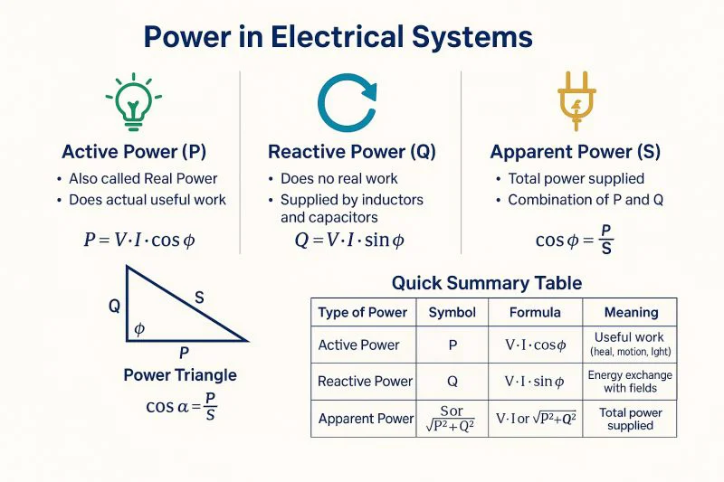
Here, Q is reactive power (measured in VAR), which does no real work but sustains the electromagnetic fields in inductors and capacitors. The closer PF is to 1.0, the more efficiently the system uses its apparent capacity — less reactive power circulates needlessly in the network. A lower PF means more reactive power is flowing relative to real power, increasing line losses, causing voltage fluctuations, and triggering utility penalties.
In modern power systems, two distinct PF metrics matter:
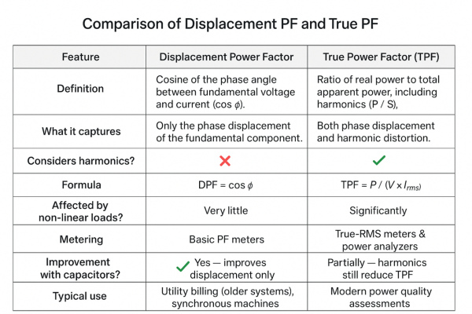
- Displacement Power Factor (DPF): Based only on the phase angle between the fundamental voltage and current — essentially cosϕ.
- True Power Factor (TPF): Accounts for both phase displacement and harmonic distortion. When harmonics are present, TPF < DPF.
Energy storage systems can degrade both components simultaneously, making the problem multidimensional.
Why ESS Introduces Reactive Power Complications
Unlike a rotating synchronous generator — which naturally produces a sinusoidal voltage by the physics of electromagnetic induction — a BESS stores DC energy and must convert it to grid-quality AC through a Power Conversion System (PCS), also called a bidirectional inverter. This power electronics interface is the origin of most PF-related issues. The PCS controls both active power (P) and reactive power (Q) independently, but without deliberate configuration, it can introduce significant reactive disturbances.
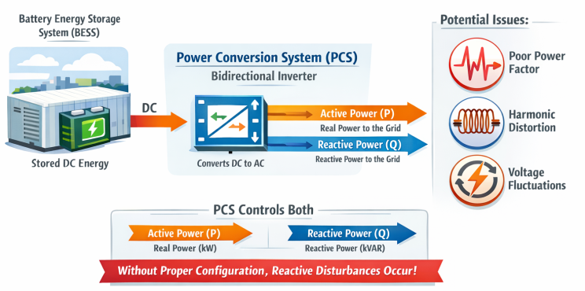
The Core Reason Why Energy Storage Integration lowers the Power Factor
Power factor is an important indicator for measuring the proportion of active power to total power in a power system. Power factor = P/S, where P is active power and S is apparent power. The decrease in power factor after the integration of energy storage systems is mainly related to the following factors:
Reactive Power Characteristics of the PCS/Inverter
The inverter connecting a BESS to the grid is built around IGBTs (Insulated Gate Bipolar Transistors) and other fast-switching semiconductor devices. Several PCS-level phenomena degrade PF:
- Non-ideal switching transients: Switching devices such as IGBTs have transient reactive power demand during the commutation process, which may cause the PCS to inject or absorb reactive power into the grid.
- Constant active power mode: If the PCS adopts "constant active power control" without closed-loop regulation of reactive power, its power factor may deviate from 1. For example, when the system needs to respond quickly to active power fluctuations, the PCS may transiently absorb delayed reactive power due to current loop bandwidth limitations, resulting in a decrease in instantaneous power factor.
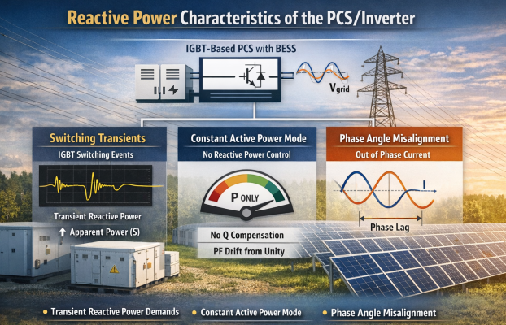
- Harmonic Pollution from PWM Modulation: The PCS uses Pulse-Width Modulation (PWM) to synthesize the AC output from the DC battery voltage. PWM is highly efficient but produces harmonic currents — most characteristically the 5th and 7th order harmonics (i.e., at 250 Hz and 350 Hz in a 50 Hz system).
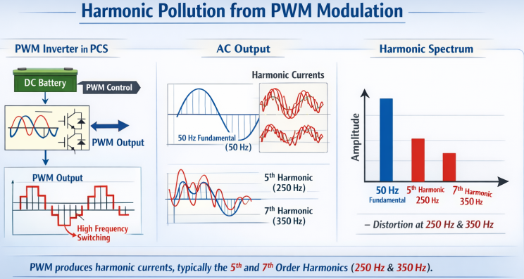
Switching of operating modes for energy storage systems
When energy storage systems switch between charging and discharging modes, reactive power fluctuations may occur.
- Charging mode: The energy storage system is equivalent to an "inductive load" and may absorb lagging reactive power (especially in the early stage of battery charging, when the current is large and the phase lag is large).
- Discharge mode: If the PCS is not properly controlled, it may output reactive power ahead of the load (for example, when the battery is discharging, the converter may enter the capacitive operating region due to DC voltage fluctuations).
- Transient process: During mode switching, the phase-locked loop (PLL) of the PCS may lose lock due to grid voltage fluctuations, resulting in uncontrolled reactive current and temporarily lowering the power factor.
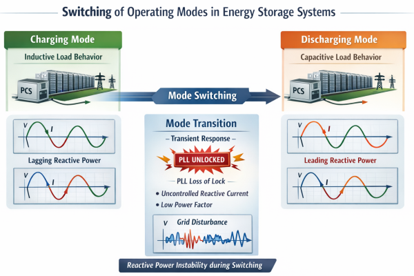
The Active Power Offset Effect
This cause is particularly relevant for industrial and commercial facilities that install ESS alongside solar PV. When the ESS (or combined PV+Storage system) discharges, it supplies active power to the facility's loads first. This reduces the active power drawn from the grid while leaving the reactive power requirement of inductive loads (motors, transformers, HVAC) fully supplied by the grid.
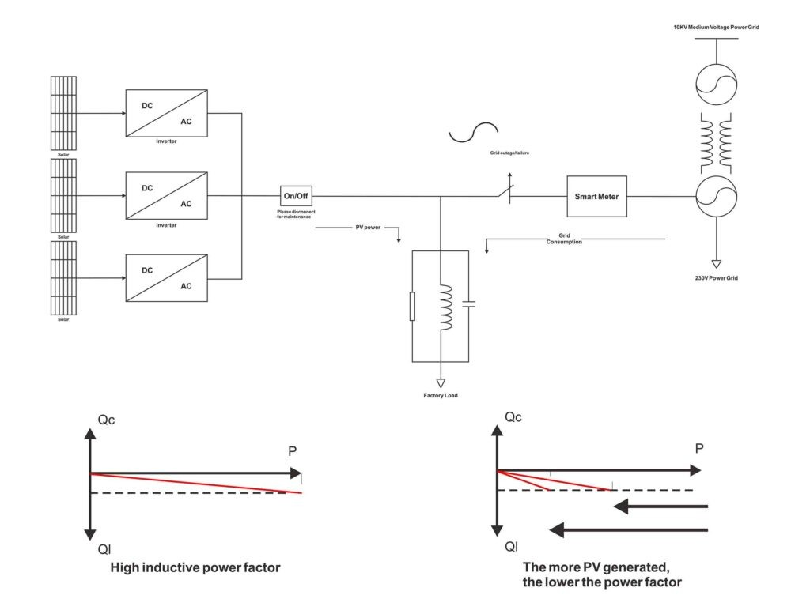
The mathematics are straightforward. Before ESS installation, the utility supplies both P and Q, so the metered PF reflects the facility's true load characteristics. After ESS installation, if the ESS only provides P:
- P from the grid decreases significantly
- Q from the grid remains essentially unchanged
- Since PF=P/P2+Q2PF=P/P2+Q2, the ratio falls — and PF drops
This effect can be severe in facilities with large motor loads or other inductive equipment, because the reactive demand of those loads remains constant regardless of ESS operation.
Grid impedance and system resonance
When an energy storage system is connected to the distribution network, if the grid has inductive impedance (such as long lines or transformer leakage reactance), it may form an LC resonant circuit with the filter capacitor of the energy storage system.
Resonance amplifies harmonic currents of a specific frequency, leading to a surge in reactive power and a deterioration in the power factor. When the output filter capacitor of an energy storage system resonates with the grid inductance at a certain harmonic frequency, the harmonic current may reach several times the rated current, significantly increasing the apparent power S.
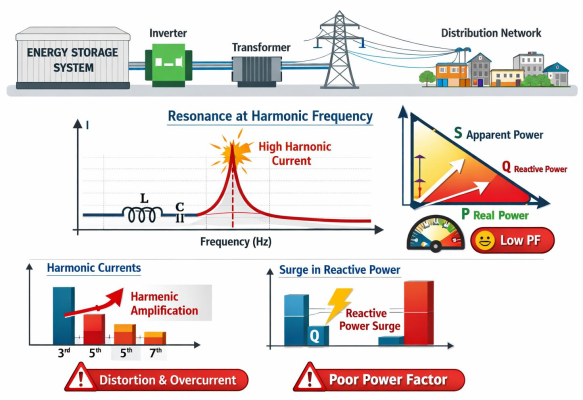
Multi-ESS Coordination Effects
In large-scale energy storage power plants, multiple energy storage units (such as battery clusters) are connected to the grid in parallel, which may exacerbate power factor problems for the following reasons:
Inconsistent parameters: The control parameters (such as PI regulator parameters and dead time) of each PCS are slightly different, which leads to uneven distribution of reactive current when connected in parallel and overload of some units.
Circulating current problem: Circulating current may occur between parallel PCS due to differences in voltage phase or amplitude. The circulating current contains a large amount of reactive power, which further reduces the overall power factor of the system.
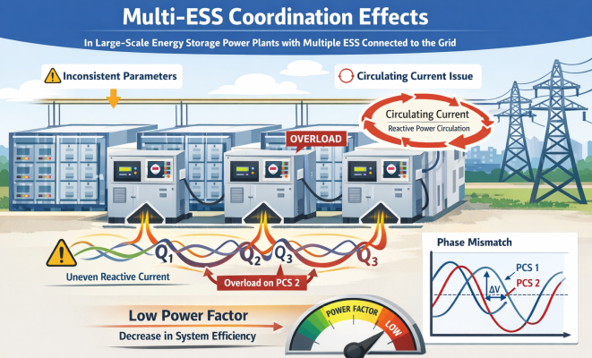
The Impact of Power Factor Deterioration
1. Increased grid losses: Reactive power leads to increased copper losses in transmission lines and transformers, reducing system efficiency.
2. Decreased voltage stability: Lagging reactive power can cause the grid voltage to drop, especially at the end of the distribution network, which may affect the normal operation of other loads.
3. Risk of electricity bill penalties: Most power grid companies have assessment requirements for the power factor on the user side (such as penalties for a power factor below 0.9). If the power factor does not meet the standards after energy storage is connected, it may increase operating costs.
4. Shortened equipment lifespan: Harmonics and reactive currents can cause transformers, cables and other equipment to heat up more, accelerating insulation aging.
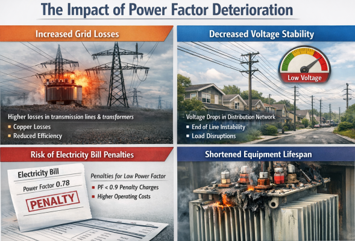
Solutions and Mitigation Strategies
To address the power factor issues caused by energy storage integration, a comprehensive strategy of "equipment improvement + control optimization + system coordination" can be adopted:
Static VAR Generator (SVG)
SVG generates the required reactive current in real time (lagging or leading) through a voltage source inverter, quickly compensating for the reactive power demand of the energy storage system (response time can reach the millisecond level). It has a wide dynamic adjustment range (-1 to +1 power factor) and can suppress harmonics at the same time, making it suitable for high power fluctuation scenarios (such as new energy distribution and storage systems).
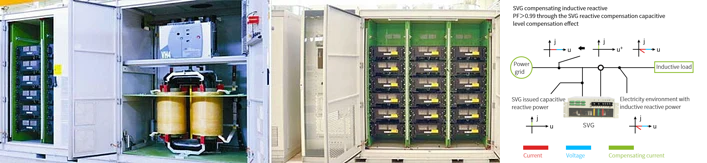
The configuration method involves installing a centralized SVG at the grid connection point of the energy storage power station or integrating a distributed small-capacity SVG into each PCS module to achieve local reactive power compensation.
Control optimization of the energy storage converter (PCS)
Add a reactive power outer loop to the PCS control strategy. By detecting the grid connection point voltage and current, calculate the required reactive power reference value in real time, so that the PCS can actively output or absorb reactive power to maintain a power factor of 1.
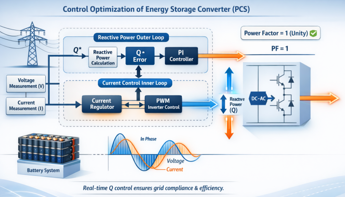
Hardware Design and Parameter Matching
Optimize filter parameters: Design PCS filter parameters (such as inductance and capacitance values) based on the power grid impedance characteristics to avoid resonant frequencies;
Select high power factor devices: Use wide bandgap semiconductor devices such as silicon carbide (SiC) and gallium nitride (GaN) to reduce switching losses and reactive power requirements;
Distributed compensation for distributed energy storage: For distributed energy storage (such as user-side photovoltaic-storage systems), small reactive power compensation devices (such as thyristor switched capacitors, TSCs) can be installed locally in each energy storage unit to reduce the transmission of reactive power in the power grid.
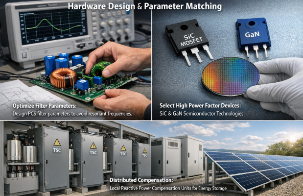
Smart Energy Manager for Dynamic PF Control
A smart energy manager can continuously monitor the bus PF, calculate the required reactive power across all inverters in real time, and dispatch Q set-points to each PCS unit via communication protocols (e.g., RS485, Modbus). This approach leverages the existing inverter hardware without additional compensation hardware, minimizing capital expenditure — particularly attractive for systems where the PCS already has four-quadrant capability.
"Seagull" Voltage-Power Droop Curve
Research on the Willenhall ESS in the UK demonstrated that programming the BESS inverter with a "seagull" shaped P-Q droop curve — absorbing reactive power at high voltage export levels and injecting at low levels — can maintain near-neutral voltage and PF impact throughout the charge/discharge cycle. This strategy shapes inverter reactive behavior as a function of real power output, creating a self-correcting PF response without requiring external compensation hardware.
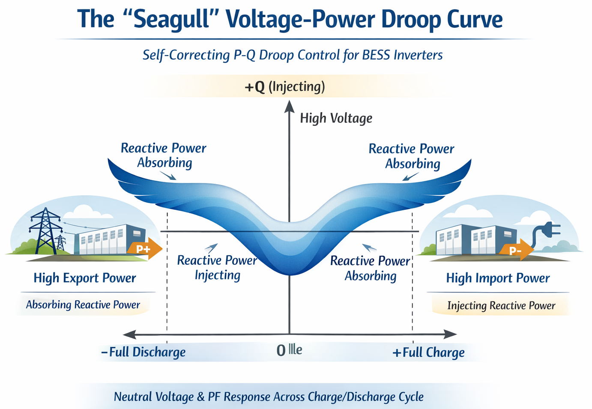
Implementation Recommendations
1. Large-scale energy storage power stations should adopt a combined solution of "inverter reactive power control + SVG dynamic compensation + active filter harmonic mitigation".
2. User-side energy storage systems (commercial and industrial energy storage) Prioritize inverter control strategy optimization (such as setting a fixed power factor) and use small capacitor banks for static reactive power compensation.
3. In microgrid scenarios, adopt droop control + adaptive reactive power compensation, and dynamically adjust reactive power output according to local load characteristics to ensure that the power factor remains stable above 0.9 during off-grid operation.
Conclusion
The power factor reduction associated with ESS grid connection is not a single-cause problem but rather an interplay of inverter physics, control architecture, operational mode dynamics, and system-level reactive power accounting. At its heart, the issue stems from the fact that most ESS inverters default to dispatching only active power, leaving the grid to supply all reactive power — while simultaneously introducing harmonic distortions that inflate apparent power. The charging mode's inductive behavior and PLL transients during mode switching add further reactive disturbances.
The good news is that modern BESS technology is fully capable of operating as a net PF-correcting asset — functioning as a STATCOM when idle and actively regulating reactive power during charge/discharge cycles. Achieving this requires deliberate engineering choices at the design stage: proper PCS control configuration, strategic grid connection point selection, and supplemental reactive compensation where needed. For energy storage system operators in India and globally, proactively addressing PF management is not just a grid code requirement — it is a prerequisite for realizing the full economic potential of the investment.